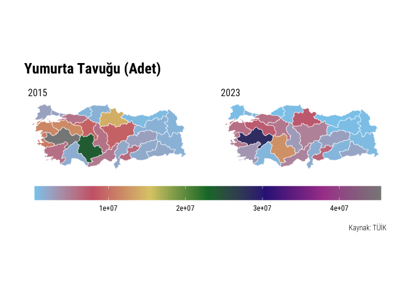
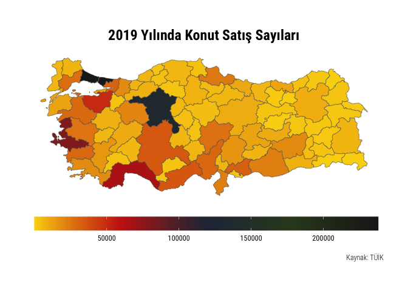
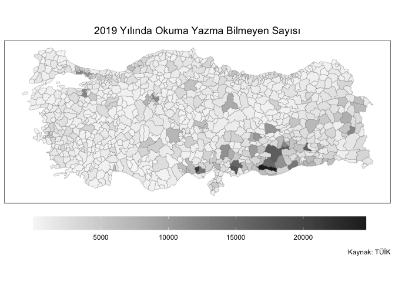
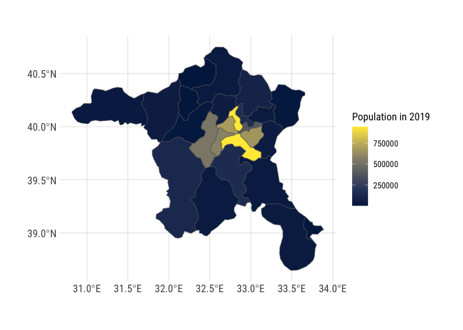
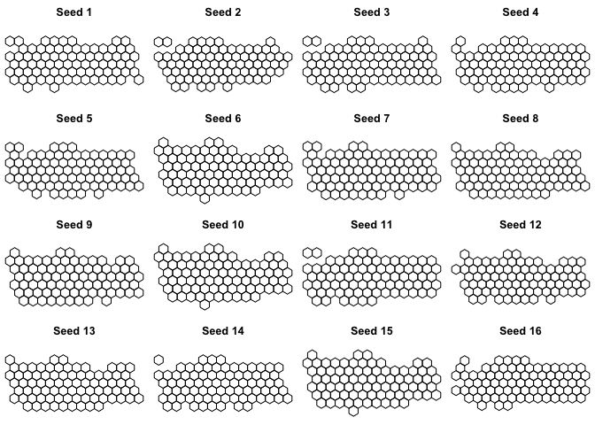
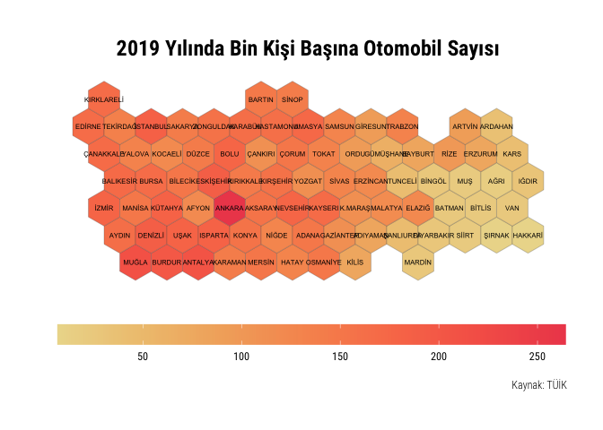
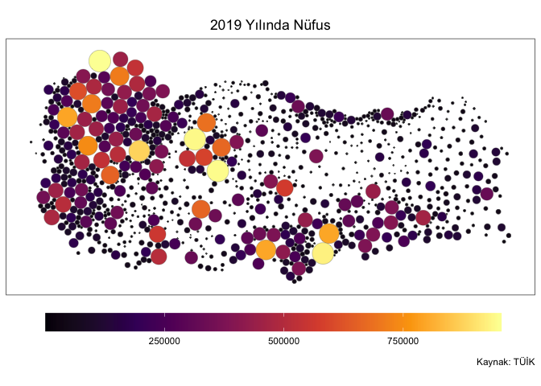
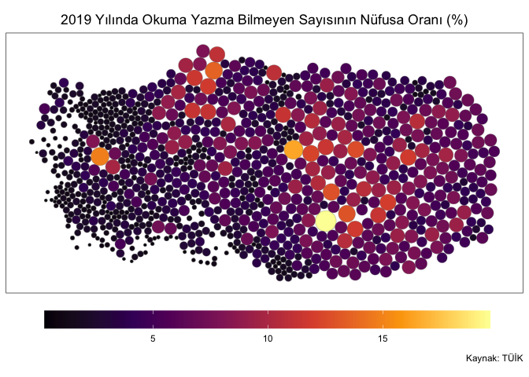

The goal of tuik is to extract data file and database URLs from TUIK webpage. Package can also download data from Geographical Statistics Portal.
Installation
You can install the development version from GitHub with:
# install.packages("devtools")
devtools::install_github("emraher/tuik")Example
library(tidyverse)
library(tuik)
(st <- statistical_themes())
#> # A tibble: 17 × 2
#> theme_name theme_id
#> <chr> <chr>
#> 1 Adalet ve Seçim 110
#> 2 Bilim, Teknoloji ve Bilgi Toplumu 102
#> 3 Çevre ve Enerji 103
#> 4 Dış Ticaret 104
#> 5 Eğitim, Kültür, Spor ve Turizm 105
#> 6 Ekonomik Güven 117
#> 7 Enflasyon ve Fiyat 106
#> 8 Gelir, Yaşam, Tüketim ve Yoksulluk 107
#> 9 İnşaat ve Konut 116
#> 10 İstihdam, İşsizlik ve Ücret 108
#> 11 Nüfus ve Demografi 109
#> 12 Sağlık ve Sosyal Koruma 101
#> 13 Sanayi 114
#> 14 Tarım 111
#> 15 Ticaret ve Hizmet 115
#> 16 Ulaştırma ve Haberleşme 112
#> 17 Ulusal Hesaplar 113
# stab <- statistical_tables("aaa")
#> Error in check_theme_id(theme) :
#> You should select a valid theme ID!
# stab <- statistical_tables(c(123, 143))
#> Error in check_theme_id(theme) : You can select only one theme!
(stab <- statistical_tables("110"))
#> # A tibble: 52 × 5
#> theme_name theme_id data_name data_date datafile_url
#> <chr> <chr> <chr> <date> <chr>
#> 1 Adalet ve Seçim 110 Hükümlü ve Tutuklu Sayısı 2021-11-02 http://data…
#> 2 Adalet ve Seçim 110 Suç Türü ve Medeni Durumuna… 2021-11-02 http://data…
#> 3 Adalet ve Seçim 110 İBBS, 1. Düzeyde, Suç Türü … 2021-11-02 http://data…
#> 4 Adalet ve Seçim 110 İBBS 3. Düzeyde, Daimi İkam… 2021-11-02 http://data…
#> 5 Adalet ve Seçim 110 Suç Türü ve Uyruğuna Göre C… 2021-11-02 http://data…
#> 6 Adalet ve Seçim 110 Suç Türü ve Eğitim Durumuna… 2021-11-02 http://data…
#> 7 Adalet ve Seçim 110 Suç Türü ve Suçun İşlendiği… 2021-11-02 http://data…
#> 8 Adalet ve Seçim 110 İBBS, 3. Düzeyde, Suç Türü … 2021-11-02 http://data…
#> 9 Adalet ve Seçim 110 Suç Türü ve Suçun İşlendiği… 2021-11-02 http://data…
#> 10 Adalet ve Seçim 110 İBBS 3. Düzeyde, Suçun İşle… 2021-11-02 http://data…
#> # ℹ 42 more rows
# sdb <- statistical_databases("aaa")
#> Error in check_theme_id(theme) :
#> You should select a valid theme ID!
# sdb <- statistical_databases(c(123, 143))
#> Error in check_theme_id(theme) : You can select only one theme!
(sdb <- statistical_databases(110))
#> # A tibble: 6 × 4
#> theme_name theme_id db_name db_url
#> <chr> <chr> <chr> <chr>
#> 1 Adalet ve Seçim 110 "Milletvekili Seçim Sonuçları " http:…
#> 2 Adalet ve Seçim 110 "Mahalli İdareler Seçim Sonuçları " http:…
#> 3 Adalet ve Seçim 110 "Cumhurbaşkanlığı Seçimi / Halk Oylaması Sonu… http:…
#> 4 Adalet ve Seçim 110 "Ceza İnfaz Kurumuna Giren Hükümlü İstatistik… http:…
#> 5 Adalet ve Seçim 110 "Güvenlik Birimine Gelen veya Getirilen Çocuk… http:…
#> 6 Adalet ve Seçim 110 "Ceza İnfaz Kurumundan Çıkan Hükümlü İstatist… http:…If you are having problems at this stage, please see this issue on GitHub.
# -------------------------------------------------------------------------- ###
# Saving Data Files----
# -------------------------------------------------------------------------- ###
# Read xls files into R
# NOTE: TUIK xls files are messy!!!
download.file(stab$datafile_url[1], destfile = "/tmp/file.xls")
(dt <- tibble::as_tibble(readxl::read_xls("/tmp/file.xls")))
#> # A tibble: 17 × 4
#> `Hükümlü ve tutuklu sayısı, 2011-2020` ...2 ...3 ...4
#> <chr> <chr> <chr> <chr>
#> 1 "Prison population, 2011-2020" <NA> <NA> <NA>
#> 2 "Yıllar\nYears" "Toplam\nT… "Erk… "Kad…
#> 3 <NA> <NA> <NA> <NA>
#> 4 "2011" "128253" "123… "460…
#> 5 "2012" "136638" "131… "490…
#> 6 "2013" "144098" "138… "519…
#> 7 "2014" "158690" "152… "578…
#> 8 "2015" "177262" "170… "650…
#> 9 "2016" "200727" "192… "837…
#> 10 "2017" "232340" "222… "989…
#> 11 "2018" "264842" "254… "104…
#> 12 "2019" "291546" "280… "114…
#> 13 "2020" "266831" "256… "106…
#> 14 "Kaynak: Ceza İnfaz Kurumu İstatistikleri, 2011-2020" <NA> <NA> <NA>
#> 15 "Source: Prison Statistics, 2011-2020" <NA> <NA> <NA>
#> 16 "Bilgiler 31 Aralık tarihine göredir." <NA> <NA> <NA>
#> 17 "Data are given as at 31 December." <NA> <NA> <NA>
# Download file from URL
filename <- paste0(janitor::make_clean_names(stab$data_name[1]),
janitor::make_clean_names(stab$data_date[1]))
download.file(stab$datafile_url[1],
destfile = paste0("/tmp/", filename, ".xls"),
mode = "wb")
# -------------------------------------------------------------------------- ###
# All DB Links---- NOT WORKING AT THIS TIME. TUIK CHANGED THE PAGE
# -------------------------------------------------------------------------- ###
# all_dbs <- purrr::map_df(.x = st$theme_id, .f = ~statistical_databases(.x))
#
# all_dbs %>%
# dplyr::count(theme_name, name = "database_count")
# -------------------------------------------------------------------------- ###
# Download Geo Data----
# -------------------------------------------------------------------------- ###
# Download Variable Names and Codes
(dt <- geo_data())
#> # A tibble: 76 × 6
#> var_name var_num var_levels var_period var_source var_recordnum
#> <chr> <chr> <list> <chr> <chr> <dbl>
#> 1 Atık hizmeti verilen … CVRBA-… <dbl [2]> yillik medas 5
#> 2 Atıksu Arıtma Hizmeti… CVRAS-… <dbl [2]> yillik medas 5
#> 3 Kişi Başı Günlük Atık… CVRAS-… <dbl [2]> yillik medas 5
#> 4 Kanalizasyon Hizmeti … CVRAS-… <dbl [2]> yillik medas 5
#> 5 İçme Suyu Şebekesi Bu… CVRBS-… <dbl [2]> yillik medas 5
#> 6 İçme Suyu Arıtma Hizm… CVRBS-… <dbl [2]> yillik medas 5
#> 7 Kişi Başına Elektrik … ENR-GK… <dbl [1]> yillik ilGosterg… 5
#> 8 Okuma Yazma Bilmeyen … ULE-GK… <dbl [3]> yillik medas 5
#> 9 Sinema Salon Sayısı SNM-GK… <dbl [2]> yillik medas 5
#> 10 Sinema Film Sayısı SNM-GK… <dbl [2]> yillik medas 5
#> # ℹ 66 more rows
# Download data for a given level and variable
dt |>
filter(var_num == "SNM-GK160951-O33303")
#> # A tibble: 1 × 6
#> var_name var_num var_levels var_period var_source var_recordnum
#> <chr> <chr> <list> <chr> <chr> <dbl>
#> 1 Sinema Film Sayısı SNM-GK16095… <dbl [2]> yillik medas 5
(dt_x <- geo_data(variable_level = 3,
variable_no = "SNM-GK160951-O33303",
variable_source = "medas",
variable_period = "yillik",
variable_recnum = 5))
#> # A tibble: 405 × 3
#> code date sinema_film_sayisi
#> <chr> <chr> <chr>
#> 1 39 2022 278
#> 2 39 2021 144
#> 3 39 2020 112
#> 4 39 2019 368
#> 5 39 2018 384
#> 6 68 2022 128
#> 7 68 2021 83
#> 8 68 2020 53
#> 9 68 2019 134
#> 10 68 2018 86
#> # ℹ 395 more rows
# (dt <- geo_data(4, "TFE-GK105747-O23001"))
#> Error in value[[3L]](cond) :
#> This data (TFE-GK105747-O23001) is not available at this NUTS level (level = 4)!!!
# -------------------------------------------------------------------------- ###
# Download Geo Map----
# -------------------------------------------------------------------------- ###
(dt_sf <- geo_map(9))
#> Simple feature collection with 1003 features and 4 fields
#> Geometry type: POINT
#> Dimension: XY
#> Bounding box: xmin: 25.8861 ymin: 35.9023 xmax: 44.5762 ymax: 42.0245
#> Geodetic CRS: WGS 84
#> # A tibble: 1,003 × 5
#> ad tp bs bm geometry
#> <chr> <int> <int> <int> <POINT [°]>
#> 1 İSTANBUL 1 1 1 (29.0107 41.6219)
#> 2 ANKARA 1 1 1 (32.8478 39.9383)
#> 3 İZMİR 1 1 1 (27.1529 38.4102)
#> 4 DİYARBAKIR 1 1 1 (40.2125 37.924)
#> 5 ESKİŞEHİR 1 1 0 (30.4944 39.7685)
#> 6 ANTALYA 1 1 1 (30.6962 36.9071)
#> 7 HATAY 1 1 1 (36.1588 36.1988)
#> 8 MERSİN 1 1 0 (34.6544 36.8217)
#> 9 KAYSERİ 1 1 1 (35.8886 38.7222)
#> 10 MARDİN 1 1 0 (40.7377 37.3122)
#> # ℹ 993 more rows
(dt_sf <- geo_map(3))
#> Simple feature collection with 81 features and 5 fields
#> Geometry type: MULTIPOLYGON
#> Dimension: XY
#> Bounding box: xmin: 25.66 ymin: 35.81 xmax: 44.81 ymax: 42.1
#> Geodetic CRS: WGS 84
#> # A tibble: 81 × 6
#> code bolgeKodu nutsKodu name ad geometry
#> * <chr> <chr> <chr> <chr> <chr> <MULTIPOLYGON [°]>
#> 1 9 TR32 TR321 AYDIN AYDIN (((28.2497 37.5499, 28.2…
#> 2 1 TR62 TR621 ADANA ADANA (((36.18 37.7096, 36.189…
#> 3 2 TRC1 TRC12 ADIYAMAN ADIYAMAN (((38.9199 37.8197, 38.9…
#> 4 3 TR33 TR332 AFYONKARAHİSAR AFYONKARAH… (((30.6098 38.2199, 30.5…
#> 5 7 TR61 TR611 ANTALYA ANTALYA (((32.1898 36.9604, 32.2…
#> 6 20 TR32 TR322 DENİZLİ DENİZLİ (((28.76 37.2496, 28.729…
#> 7 37 TR82 TR821 KASTAMONU KASTAMONU (((33.7802 41.0398, 33.7…
#> 8 10 TR22 TR221 BALIKESİR BALIKESİR (((26.9896 39.2999, 26.9…
#> 9 32 TR61 TR612 ISPARTA ISPARTA (((31.3504 37.5899, 31.3…
#> 10 35 TR31 TR310 İZMİR İZMİR (((27.6001 38.4797, 27.6…
#> # ℹ 71 more rowsMap Examples
NUTS-2
dt |>
filter(var_num == "HYV-GK1696800-O32507")
#> # A tibble: 1 × 6
#> var_name var_num var_levels var_period var_source var_recordnum
#> <chr> <chr> <list> <chr> <chr> <dbl>
#> 1 Yumurta Tavuğu Sayısı … HYV-GK… <dbl [3]> yillik medas 5
chicken <- geo_data(variable_level = 2,
variable_no = "HYV-GK1696800-O32507",
variable_source = "medas",
variable_period = "yillik",
variable_recnum = 20) %>%
dplyr::filter(date %in% c("2023", "2015")) |>
mutate(yumurta_tavugu_sayisi_adet = as.numeric(yumurta_tavugu_sayisi_adet),
date = as.numeric(date))
geo_map(2) %>%
left_join(chicken) %>%
ggplot() +
geom_sf(aes(fill = yumurta_tavugu_sayisi_adet), color = "white") +
coord_sf(datum = NA) +
rcartocolor::scale_fill_carto_c(palette = "Safe") +
hrbrthemes::theme_ipsum_rc() +
theme(legend.position = "bottom", legend.key.width = unit(3, "cm")) +
labs(fill = "",
title = "Yumurta Tavuğu (Adet)",
caption = "Kaynak: TÜİK") +
facet_wrap(~date, ncol = 2)
NUTS-3
dt |>
filter(var_num == "INS-GK055-O006")
#> # A tibble: 1 × 6
#> var_name var_num var_levels var_period var_source var_recordnum
#> <chr> <chr> <list> <chr> <chr> <dbl>
#> 1 Konut satış sayıları (… INS-GK… <dbl [1]> yillik ilGosterg… 5
house <- geo_data(variable_level = 3,
variable_no = "INS-GK055-O006",
variable_source = "ilGostergeleri",
variable_period = "yillik",
variable_recnum = 5) %>%
filter(date == 2019)
# Let's select different colors
pal <- wesanderson::wes_palette("BottleRocket2", 50, type = "continuous")
geo_map(3) %>%
left_join(house) %>%
mutate(konut_satis_sayilari_toplam = as.numeric(konut_satis_sayilari_toplam)) %>%
ggplot() +
geom_sf(aes(fill = konut_satis_sayilari_toplam)) +
coord_sf(datum = NA) +
scale_fill_gradientn(colours = pal) +
hrbrthemes::theme_ipsum_rc() +
theme(legend.position = "bottom",
legend.key.width = unit(3, "cm"),
plot.title = element_text(hjust = 0.5)) +
labs(fill = "",
title = "2019 Yılında Konut Satış Sayıları",
caption = "Kaynak: TÜİK")
LAU-1
dt |>
filter(var_num == "ULE-GK160887-O29502")
#> # A tibble: 1 × 6
#> var_name var_num var_levels var_period var_source var_recordnum
#> <chr> <chr> <list> <chr> <chr> <dbl>
#> 1 Okuma Yazma Bilmeyen S… ULE-GK… <dbl [3]> yillik medas 5
pal <- c("#f7f7f7", "#d9d9d9", "#bdbdbd", "#969696", "#737373", "#525252", "#252525")
geo_data(variable_level = 4,
variable_no = "ULE-GK160887-O29502",
variable_source = "medas",
variable_period = "yillik",
variable_recnum = 5) %>%
filter(date == 2022) %>%
left_join(geo_map(level = 4), .) %>%
mutate(okuma_yazma_bilmeyen_sayisi = as.numeric(okuma_yazma_bilmeyen_sayisi)) |>
ggplot() +
geom_sf(aes(fill = okuma_yazma_bilmeyen_sayisi), lwd = 0.1) +
coord_sf(datum = NA) +
scale_fill_gradientn(colours = pal) +
theme_bw() +
theme(legend.position = "bottom",
legend.key.width = unit(3, "cm"),
plot.title = element_text(hjust = 0.5)) +
labs(fill = "",
title = "2019 Yılında Okuma Yazma Bilmeyen Sayısı",
caption = "Kaynak: TÜİK")
geo_data(variable_level = 4,
variable_no = "ADNKS-GK137473-O29001",
variable_source = "medas",
variable_period = "yillik",
variable_recnum = 5) |>
filter(date == 2019) %>%
left_join(geo_map(level = 4), .) %>%
mutate(toplam_nufus = as.numeric(toplam_nufus)) |>
filter(bolgeKodu == "TR51") %>%
ggplot() +
geom_sf(aes(fill = toplam_nufus)) +
scale_fill_viridis_c(option = "E") +
labs(fill = "Population in 2019") +
hrbrthemes::theme_ipsum_rc()
Hex and Dorling
library(tidyverse)
library(sf)
library(cartogram)
library(geogrid)
library(tuik)
# -------------------------------------------------------------------------- ###
# Hex----
# -------------------------------------------------------------------------- ###
# Read map data and transform CRS
tur_hex_map <- st_transform(geo_map(level = 3), crs = 3395)
dt |>
filter(var_num == "ULS-GK093-O009")
#> # A tibble: 1 × 6
#> var_name var_num var_levels var_period var_source var_recordnum
#> <chr> <chr> <list> <chr> <chr> <dbl>
#> 1 Bin kişi başına otomob… ULS-GK… <dbl [1]> yillik ilGosterg… 5
# Read data and merge
tur_hex_dt <- geo_data(variable_level = 3,
variable_no = "ULS-GK093-O009",
variable_source = "ilGostergeleri",
variable_period = "yillik",
variable_recnum = 5) %>%
filter(date == 2019) %>%
left_join(tur_hex_map, .)
# Choose one seed according to these plots
par(mfrow = c(4, 4), mar = c(0, 0, 2, 0))
for (i in 1:16) {
new_cells <- calculate_grid(shape = tur_hex_dt, grid_type = "hexagonal", seed = i)
plot(new_cells, main = paste("Seed", i, sep = " "))
}
# Create hex map
new_hex <- calculate_grid(shape = tur_hex_dt, grid_type = "hexagonal", seed = 9)
result_hex <- assign_polygons(tur_hex_dt, new_hex)
# Plot
result_hex %>%
mutate(name = stringr::str_replace(name, "AFYONKARAHİSAR", "AFYON")) %>%
mutate(name = stringr::str_replace(name, "KAHRAMANMARAŞ", "K.MARAŞ")) %>%
mutate(bin_kisi_basina_otomobil_sayisi = as.numeric(bin_kisi_basina_otomobil_sayisi)) |>
ggplot() +
geom_sf(aes(fill = bin_kisi_basina_otomobil_sayisi), lwd = 0.1) +
geom_sf_text(aes(label = name), color = "black", size = 2) +
coord_sf(datum = NA) +
rcartocolor::scale_fill_carto_c(palette = "OrYel") +
hrbrthemes::theme_ipsum_rc() +
theme(legend.position = "bottom",
legend.key.width = unit(3, "cm"),
plot.title = element_text(hjust = 0.5)) +
labs(fill = "",
y = "",
x = "",
title = "2019 Yılında Bin Kişi Başına Otomobil Sayısı",
caption = "Kaynak: TÜİK")
# -------------------------------------------------------------------------- ###
# Dorling----
# -------------------------------------------------------------------------- ###
# Read map data and transform CRS
tur_map <- st_transform(geo_map(level = 4), crs = 3395)
# Read data and merge
tur_pop <- geo_data(variable_level = 4,
variable_no = "ADNKS-GK137473-O29001",
variable_source = "medas",
variable_period = "yillik",
variable_recnum = 5)
tur_ill <- geo_data(variable_level = 4,
variable_no = "ULE-GK160887-O29502",
variable_source = "medas",
variable_period = "yillik",
variable_recnum = 5)
tur_dt <- left_join(tur_pop, tur_ill) %>%
filter(date == 2019) %>%
left_join(tur_map, .) %>%
mutate(okuma_yazma_bilmeyen_sayisi = as.numeric(okuma_yazma_bilmeyen_sayisi),
toplam_nufus = as.numeric(toplam_nufus)) |>
mutate(value = 100*(okuma_yazma_bilmeyen_sayisi/toplam_nufus))
# Create dorling maps
tur_dorling1 <- cartogram_dorling(tur_dt, "okuma_yazma_bilmeyen_sayisi", 0.4)
tur_dorling1 %>%
ggplot() +
geom_sf(aes(fill = okuma_yazma_bilmeyen_sayisi), lwd = 0.1) +
coord_sf(datum = NA) +
scale_fill_viridis_c(option = "B") +
theme_bw() +
theme(legend.position = "bottom",
legend.key.width = unit(3, "cm"),
plot.title = element_text(hjust = 0.5)) +
labs(fill = "",
title = "2019 Yılında Okuma Yazma Bilmeyen Sayısı",
caption = "Kaynak: TÜİK")
tur_dorling2 <- cartogram_dorling(tur_dt, "toplam_nufus", 0.4)
tur_dorling2 %>%
ggplot() +
geom_sf(aes(fill = toplam_nufus), lwd = 0.1) +
coord_sf(datum = NA) +
scale_fill_viridis_c(option = "B") +
theme_bw() +
theme(legend.position = "bottom",
legend.key.width = unit(3, "cm"),
plot.title = element_text(hjust = 0.5)) +
labs(fill = "",
title = "2019 Yılında Nüfus",
caption = "Kaynak: TÜİK")
tur_dorling3 <- cartogram_dorling(tur_dt, "value", 0.4)
tur_dorling3 %>%
ggplot() +
geom_sf(aes(fill = value), lwd = 0.1) +
coord_sf(datum = NA) +
scale_fill_viridis_c(option = "B") +
theme_bw() +
theme(legend.position = "bottom",
legend.key.width = unit(3, "cm"),
plot.title = element_text(hjust = 0.5)) +
labs(fill = "",
title = "2019 Yılında Okuma Yazma Bilmeyen Sayısının Nüfusa Oranı (%)",
caption = "Kaynak: TÜİK")